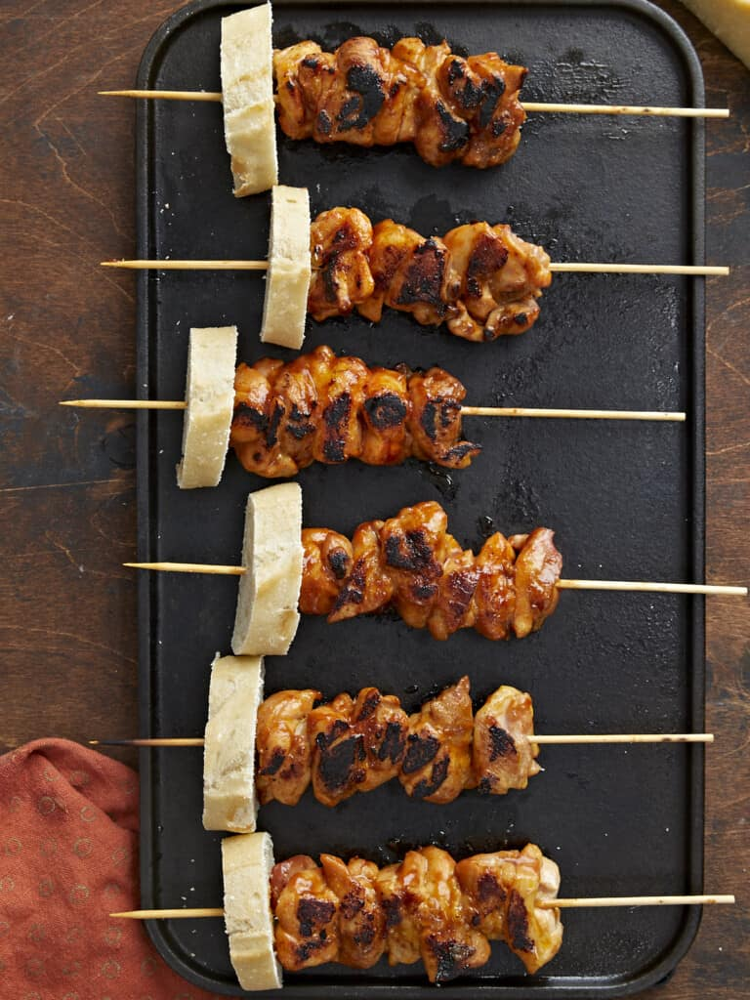

Ingredients
- 3 lbs boneless and skinless chicken thighs, about 5 to 6
- 2 tsp adobo
- 1 1/2 tsp sazón
- 2 tsp salt
- 2 Tbsp cooking oil, plus a touch more for greasing
- 1 cup BBQ Sauce
Steps
- Pat chicken thighs dry with a paper towel. Then chop the chicken into bite-size pieces (about 5 to 6 pieces per thigh).
- Add the adobo, sazón, and salt to a large bowl and mix.
- Add the chopped chicken thighs to the bowl along with the cooking oil and mix until the chicken is thoroughly covered.
with plastic wrap or parchment directly on the surface of the chicken and marinate for at least an hour, but preferably overnight.
- Half an hour before you pull the chicken, soak at least 6 wood skewers in water so they don't burn. It's best to soak a few extra skewers just in case one of them breaks.
- When you're ready to cook, preheat a grill pan on high. Then thread a thigh's worth of chicken pieces on each skewer, about 5 or 6 chunks.
You want the chicken chunks close but not pressed tightly against each other. Brush both sides of each skewer with BBQ sauce, about 1/2 cup total.
- When the grill pan is smoking hot, brush it with a touch of cooking oil. Then, place the skewers on the grill pan, making sure not to crowd the pan or place the skewers too close to each other.
- After 5 minutes, brush 1/4 cup of BBQ sauce on the top surface of the chicken. Next, flip the chicken, and brush another 1/4 cup of BBQ sauce on the top layer.
Cook for 5 more minutes, until char develops and the internal temperature of the chicken registers at 160°F. Now all you have left to do is eat! Buen provecho!